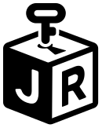

SOFTWARE
软件开发
常见职位：Frontend / Backend / Full-stack Developer
- 主要做什么：开发网站、应用程序和后台系统，并修复程序问题。
- 招聘常看：编程语言、网页与接口、数据库、Git、测试和调试。
- 毕业生怎么准备：完成一个可以实际运行的项目，并能解释自己负责的部分、测试方式和技术选择。


从毕业前积累相关实习与项目，到确认工作权、选择岗位、准备简历、投递和面试。
这不是一本岗位百科，也不是“固定天数上岸”计划。它帮助缺少澳洲本地专业经验的国际毕业生，建立一条可以执行、检查和调整的求职链路。
先核对当前签证、毕业后的工作权、期限与岗位身份限制。
从专业、课程、经历、城市和真实岗位名称确定主攻、备选与过渡方向。
收集同类岗位，分清必须满足的条件、常见能力和单家公司的特殊偏好。
优先争取与目标岗位相关的实习、兼职和真实项目；没有实习时，准备一个完整、能够展示和讲解的项目。
用一份基础简历，按岗位调整首屏、项目顺序与关键词。
组合官网、招聘平台、学校渠道与 Networking，记录每次结果。
没有回复、没有通过初试、技术面或终面的原因不同，不要一遇到拒绝就盲目再学一门课。
对缺少正式行业经验的毕业生来说，只有学历和技能列表通常不足以让雇主判断你能否完成工作。相关实习、兼职和项目，是简历与面试最重要的内容来源之一。
实习、假期实习项目、校内岗位、研究助理或相关兼职，可以帮助你接触真实团队、工作流程和业务要求。
毕业综合项目、学生咨询、社团或志愿项目，只要有真实问题、明确分工和可以检查的结果，都能成为求职经历。
选择一个与目标岗位有关的问题，完成可运行或可展示的成果，并保留过程、测试、修改和反思，而不是照着教程复刻。
查看 10-20 条真实招聘信息，了解常见工作内容，再选择一个主攻方向和一个相近方向。暂时不需要决定一辈子的职业。
同时查看实习、学校与企业合作项目、毕业综合项目、校内岗位、社团、志愿项目和小企业项目，不要只等待大公司的正式实习。
开发岗位准备可运行应用；数据岗位展示从原始数据到结论的过程；BA、QA、市场、会计和运营岗位则准备与实际职责相符的案例。
保存代码、报告、流程图、看板、测试记录或作品，并能说明问题、个人职责、具体行动、检查方式和最终结果。
| 你目前的情况 | 下一步重点 |
|---|---|
| 还不确定想做什么 | 比较两到三个岗位方向的招聘信息、日常工作和申请条件，不要先报名一堆课程。 |
| 方向明确，但没有相关经历 | 优先申请实习和真实项目，同时完成一个与岗位工作直接相关的自主项目。 |
| 做过项目，但不会写进简历 | 补充个人职责、过程、检查方式和结果，并准备能够在面试中展示的版本。 |
| 已经临近毕业 | 一边申请 Graduate 和 Junior 岗位，一边确认工作权、推荐人、简历和面试案例。 |
以下内容来自 2026 年 10 月仍可查看的澳洲 Graduate 和 Junior 招聘页面。结论不是“所有岗位都要求实习”，而是不同方向会用不同方式判断你能否完成实际工作。
| 岗位方向与近期 JD | 雇主实际在看什么 | 没有正式经验时怎样准备 |
|---|---|---|
| 软件开发 RecordPoint Graduate Software Engineer | 相关学位、全职工作权、清楚解释技术概念；入职后参与开发流程、功能开发、产品支持和 AI 工具检查。 | 准备一个可运行项目，包含代码说明、测试、问题修复和技术选择；该岗位没有把既往实习列为必须条件。 |
| 数据分析 FDM Data & Analytics Graduate | 学位、分析和解决问题能力、沟通、学习速度；Excel、SQL、Python 和 BI 工具属于加分项，广告明确写明不要求既往数据经验。 | 用一份数据完成清洗、查询、分析和报告，说明数据质量检查以及结论怎样支持决定。 |
| 业务分析 Blacktown City Council Graduate BA | 分析数据、绘制流程、收集需求、Excel/Power BI、报告与看板、项目记录、系统测试和利益相关方沟通。 | 准备一个流程改进案例，包括现状、需求、流程图、分析、建议和验收方法；课程、社团或实习案例都可以。 |
| 软件测试 Luxury Escapes Junior QA Analyst | 端到端测试、清楚复现并记录问题、测试计划、探索测试和回归测试；SQL 与自动化环境经验属于加分项。 | 为真实网站或应用制作测试计划、测试用例、问题记录和回归结果，展示怎样发现并说明问题。 |
| IT 支持 Atturra Graduate IT Support Engineer | 工单记录、问题升级、MS365、桌面与网络基础、排错、客户服务；同时要求到岗办公和驾照等实际条件。 | 整理账号、设备、软件和网络问题的排查记录，练习写工单和向非技术用户解释解决方法。 |
雇主更关心你做过什么、怎样检查结果、能否解释过程，以及能否与他人合作。实习有帮助，但相关程度和个人职责比公司名更重要。
工作权、公民身份、安全审查、驾照、到岗地点和明确要求的企业工作年限，不能用课程项目替代。Macquarie Cloud/Cyber Graduate 就明确要求澳洲公民身份。
JD 样本：RecordPoint Graduate Software Engineer；FDM Australia Data & Analytics Graduate；Blacktown City Council Graduate Business Analyst；Luxury Escapes Junior QA Analyst；Atturra Graduate IT Support Engineer；Macquarie Technology Group Cloud Networking and Cyber Graduate。查看日期：2026-10-28。
毕业日期是学习节点，不是招聘起点。许多 Graduate Program 会在正式入职前 6—12 个月完成申请、测评和录用。
如果等拿到毕业证再研究岗位，可能已经错过一轮结构化 Graduate Program。但这不等于“毕业后没有机会”：普通 Graduate Role、Junior Role、Fixed-term、Contract 和中小企业招聘会全年出现，只是寻找方式不同。
| 入口 | 通常特点 | 你要注意 |
|---|---|---|
| Graduate Program | 批量招聘、轮岗、统一测评，通常提前很久开放。 | 毕业年份、身份、成绩和地点要求。 |
| Graduate Role | 单一团队招毕业生，开放时间更分散。 | 岗位技能比统一项目更具体。 |
| Junior / Entry-level | 不一定限定毕业年份，可能要求少量经验。 | “Junior”标题不保证要求真的初级。 |
| Internship | 可能限定在读身份，也可能转正。 | 确认是否要求仍在校和合法工作时数。 |
| Fixed-term / Contract | 按照固定期限或具体项目聘用，可能是进入行业的一种方式。 | 合同多长、工资怎样计算、是否包含 super，以及能否续约。 |
| 普通社会招聘 | 全年开放，按团队即时需求招聘。 | 用相邻经验和项目证明可立即贡献。 |
资料来源：澳洲储备银行 Information Technology Graduate；Jobs and Skills Australia, Internet Vacancy Index September 2026。查看日期：2026-10-28。
这些数字不是为了制造恐慌，而是提醒你：学历名称和技能列表还不够。雇主还会看工作权、岗位匹配度、实际项目、沟通能力，以及你能否完成团队交给你的工作。
| 你可能听过的说法 | 实际情况 |
|---|---|
| 专业热门，毕业后自然有工作 | 行业需求不等于毕业生岗位，也不等于每个城市和雇主都在招聘。 |
| Data、BA 或 QA 一定比开发容易 | 不同岗位考查的能力不同；数据、沟通、行业经验和测试能力同样会形成门槛。 |
| 拿到 485 就能申请所有 Graduate Program | 485 解决部分工作权问题，但雇主仍可能要求 PR、Citizenship 或安全许可。 |
| 现在所有企业都要求会 AI | AI 要求集中在部分技术和数据岗位；多数入门岗仍优先看基础能力和实际项目。 |
| 投够固定数量就一定能拿 Offer | 投递数量不能替代岗位匹配、简历质量和面试表现。应该根据收到的回复不断调整。 |
来源：Jobs and Skills Australia, Recruitment trends in the IT industry（2026-09）；QILT 2025 Graduate Outcomes Survey International Report（2026-06）。
求职第一道门不是简历，而是当前签证是否允许你工作、条件是什么、这种工作权能维持到什么时候。
不要只看旧邮件或预计日期。使用 VEVO 查看当前生效的签证、到期日和附加条件。
签证可能限制工作时数、工作类型或其他条件。课程完成、放假与毕业典礼不是同一个概念。
485 是符合条件的国际毕业生可能申请的临时签证，并非毕业自动获得。申请资格和期限以 Home Affairs 为准。
法律上能工作，不代表所有岗位都能申请。雇主还可能要求澳洲公民、永久居民（PR）、长期工作权或政府安全审查资格。
官方查询：澳洲内政部“工作限制”“485 毕业生临时签证”和“VEVO 签证状态查询”。
| 需要确认的内容 | 具体要确认什么 | 去哪里查看 |
|---|---|---|
| 当前有效签证 | 类别、有效期、当前条件 | VEVO / 签证批准信 |
| 课程状态 | 课程完成日、学校确认文件 | Completion letter / CoE |
| 毕业后安排 | 准备申请什么签证、什么时候准备材料、是否需要专业帮助 | 澳洲内政部 / 注册移民代理或移民律师 |
| 岗位身份要求 | 是否只接受澳洲公民、永久居民、新西兰公民或无限制工作权 | 招聘广告中的申请条件 |
| 安全审查 | 岗位是否要求政府安全审查，以及自己是否具备申请资格 | 招聘要求 / 雇主官网 |
| 担保表述 | 是否明确 no sponsorship / sponsorship available | 官方岗位页面 |
示例结构（请按个人真实情况修改） I currently hold [visa subclass], with work rights confirmed through VEVO. My current visa is valid until [date]. [Only if accurate:] I do not require employer sponsorship to commence this role. I am happy to provide evidence of my work rights during the recruitment process. 不要说：My visa should be fine / I can definitely stay permanently.
专业决定你的起点，但雇主实际筛选的是：你能做什么、能证明什么、岗位是否允许你申请。
| 你学过或做过什么 | 可以先搜索的岗位 | 还要确认什么 |
|---|---|---|
| 编程、Web、API、数据库、测试 | Graduate Software、Frontend、Backend、Full-stack、Junior Developer | 语言栈、测试、部署与工作权 |
| SQL、Excel、Power BI、统计、Python | Data Analyst、BI Analyst、Reporting Analyst、Analytics | 业务领域、数据质量与表达 |
| 流程、需求、User Story、UAT、沟通 | Business Analyst、Implementation、Project Support、Systems Analyst | 是否要求既有行业经验 |
| 测试设计、Bug、API、SQL | QA、Test Analyst、Junior Tester、Automation Tester | 自动化深度与合同资格 |
| M365、权限、设备、网络、工单 | Service Desk、IT Support、Application Support | 轮班、地点与客户沟通 |
| 分析、文案、活动、社媒与数据 | Marketing Assistant、Coordinator、Digital Marketing | 作品、渠道结果与本地表达 |
| Excel、报表、对账、财务课程 | Graduate Accountant、Finance Assistant、Audit Graduate | 专业资格、学科要求与招聘季 |
| 协调、记录、进度、Stakeholder | Project Coordinator、Operations、Program Support | 行业场景和具体沟通经历 |
示例 主攻：Junior Data Analyst 相邻：BI Analyst / Reporting Analyst 过渡：Operations Analyst / Data Support 共同基础：SQL、Excel、Power BI、数据质量、业务表达 不建议同时海投：Frontend Developer / SOC Analyst
你不需要把下面所有方向都学一遍。先了解每类工作平时做什么，再选一个与自己的课程、项目和兴趣最接近的方向。
常见职位：Frontend / Backend / Full-stack Developer
常见职位：Data Analyst / BI Analyst / Reporting Analyst
常见职位：Business Analyst / Implementation Consultant / Systems Analyst
常见职位：QA Analyst / Test Analyst / Automation Tester
常见职位：IT Support / Service Desk / Application Support
常见职位：Cloud Support / Network Support / Junior Cloud Engineer
常见职位：Cybersecurity Analyst / SOC Analyst / GRC Analyst
常见职位：AI Application Developer / Machine Learning Graduate
昆士兰州政府 2027 数字毕业生项目曾招聘 AI、自动化、业务分析、网络安全、数据、网络支持和软件开发等方向；该届申请现已关闭，这里仅用于说明近期岗位分类。
招聘广告也常被称为 JD（Job Description）。不要只看职位名称，要逐项判断自己是否符合申请条件、已经具备什么，以及还需要准备什么。
| 招聘广告里写了什么 | 应该怎样理解 | 你可以怎么做 |
|---|---|---|
| Citizenship / PR / clearance | 必须满足的身份或安全审查条件，通常不能用技能弥补。 | 不符合就暂时不申请，或向招聘方确认。 |
| Degree / graduation window | Graduate Program 可能严格限定专业和毕业年份。 | 检查成绩单、完成日期和海外学历认可。 |
| 2—3 years experience | 结合具体工作判断，这是必须条件，还是雇主对理想候选人的期望。 | 如果主要工作确实做过，可以有选择地申请。 |
| Strong communication | 通常指澄清问题、记录决策、解释风险。 | 准备有结果的 STAR 故事，不只写“英语流利”。 |
| Specific tool | 看它是岗位核心平台还是可替代工具。 | 先补高频能力，不为单条广告追每个工具。 |
| AI / automation | 判断它只是加分项、日常工具，还是这份工作的主要内容。 | 只有申请以 AI 为核心的岗位，才需要重点准备模型应用和结果评估。 |
目标岗位：____________________ 城市：________________ 查看岗位数量：10—20 条 查看日期：____________ 招聘要求 出现次数 我已经做过什么 还要准备什么 ________________ ______ ________ ________ ________________ ______ ________ ________ ________________ ______ ________ ________ 先确认：工作权 / 身份要求 / 安全审查 / 地点 / 毕业年份 再整理：经常出现的能力 / 常用工具 / 单家公司的特殊要求
相关实习、兼职和真实项目，能让简历和面试有具体内容。没有实习时，可以用毕业项目、校企合作、社团、志愿经历或完整的自主项目，说明自己做过什么、负责过什么，以及怎样检查结果。
Full-stack 项目：账号、岗位状态、提醒、筛选、测试与部署。AI 只负责初步提取招聘信息，最终内容由用户确认后保存。
SQL、Excel/Power BI：清洗岗位样本、统一技能词、检查数据质量并给出业务结论。
现状流程、需求、User Story、验收标准、UAT 与缺陷记录；证明你能把问题推进到验证。
可信表达 我使用 Copilot 起草重复的测试样板；测试策略、断言和权限场景由我定义。 生成内容经过代码 Review、故意失败测试和静态检查后才合并。 不可信表达 使用 AI 大幅提高效率并完成整个系统。
写项目时要真实：没有真实用户就不要写“提升转化率 30%”；团队成果不要全部写成个人成果；教程复刻要说明自己新增和验证了什么。
标题、Summary、技能和项目指向同一方向，不写“什么都可以”。
用项目、经历和成果证明，不用“热情、努力、快速学习”等空词。
学历、毕业时间、地点和工作权回答一致，不夸大。
| 弱表达 | 更可信的表达 |
|---|---|
| 熟悉 React、Node、AWS 和 AI。 | 用 React、Node 和 PostgreSQL 构建投递管理器；部署 API，并为权限、重复提交和失败重试编写测试。 |
| 负责数据分析和报表。 | 清洗订单数据并统一日期和产品的计算方式；用 SQL/Power BI 制作看板，记录 12 条数据检查规则。 |
| 具有良好的沟通能力。 | 协调 4 人团队澄清项目范围，把需求拆成任务并每周同步风险，按期完成演示。 |
| 来源 | 主要用途 | 实际动作 |
|---|---|---|
| 公司 Careers | 确认岗位仍开放和完整资格。 | 优先保存官方链接和截止日期。 |
| SEEK / LinkedIn | 发现职位、搜索词和相近岗位。 | 设置提醒，再到公司官网确认岗位仍在招聘。 |
| GradConnection | Graduate Program 与招聘季。 | 建立年度日历，不等毕业才看。 |
| 学校 Career Hub | 校招、活动、简历服务与校友。 | 活动后 24 小时内跟进联系人。 |
| Networking | 了解团队实际做什么，以及公司通常怎样招聘。 | 先真诚请教，不要在第一条消息里直接索要内推。 |
| 中小企业 | 即时需求、岗位名称更灵活。 | 按行业和城市建立目标公司表。 |
Networking 第一条消息 Hi Maya，我是 Monash 的 IT 应届生，正在准备 Application Support 岗位。 看到你从 Service Desk 转到 Cloud Operations，这段经历和我想发展的方向很接近。 如果方便，我想请教：新人入职前三个月，最容易被低估的一项能力是什么？ 不急着回复，感谢你分享的经历。
不要设定“90 天必须拿 Offer”。可以按毕业前 6—12 个月、3—6 个月、毕业前后和持续申请阶段安排动作，但结果取决于岗位、资格、准备情况和市场。
常见于 Graduate Program，可能包括能力测试、情景判断和录制视频回答。
通常会问求职动机、沟通、薪资、地点、毕业时间和工作权。
会深入询问项目、案例、专业知识或实际工作场景。
可能包括小组协作、展示、背景调查和联系推荐人。
失败、冲突、需求不清、时间压力、主动改进、学习新工具、影响他人、处理客户问题。
为什么做、自己负责什么、数据从哪里来、为什么这样选择、最难的问题、怎样检查结果、失败过什么。
| 方向 | 常见考查 | 提前准备什么 |
|---|---|---|
| Software | 编码、调试、API、数据库、项目讲解 | 可运行代码、测试和取舍 |
| Data | SQL、数据定义、分析、Dashboard、建议 | 从原始数据到结论的完整案例 |
| BA / QA | 需求、流程、测试、缺陷和沟通 | 流程图、UAT、测试与 STAR |
| Marketing / Operations | 案例、执行、优先级和结果 | 作品、流程和数据复盘 |
| Accounting / Finance | 准确性、Excel、专业基础与伦理 | 分析过程和核对机制 |
| 现象 | 优先检查 | 不要立刻做 |
|---|---|---|
| 投递很多，但没有回复 | 必须满足的申请条件、岗位范围、简历开头和项目内容 | 继续使用同一份简历大量投递 |
| 有 HR 电话，无下一轮 | 动机、工作权回答、表达和岗位理解 | 把问题全部归因于英语 |
| 有技术/案例面，无 Offer | 基础、思路、项目深度、验证和沟通 | 立刻更换整个职业方向 |
| 总在终面失败 | 团队匹配、STAR、Reference、岗位动机 | 只重复刷技术题 |
| 只能找到高级岗位 | 搜索词、城市、行业和相邻岗位名称 | 得出“市场完全没有岗位” |
本周新增岗位：__ 有效投递：__ Phone screen：__ 下一轮：__ 最常见的拒绝点：________________________________________ 目前最需要加强的一项：__________________________________ 下周只改变：岗位范围 / 简历首屏 / 项目内容 / 面试故事 / 渠道 停止做的事情：__________________________________________
| 检查项 | 要问清楚 |
|---|---|
| 薪资 | Base、base + super、total package 还是合同日薪？Bonus 是否保证？ |
| 合同 | Permanent、fixed-term、casual 或 contractor？试用期和通知期如何规定？ |
| 工作方式 | 办公室天数、搬迁、轮班、on-call 和加班是否明确？ |
| 工作权 | 合同期限与当前工作权是否一致？是否存在持续资格条件？ |
| 成长 | 直属经理是谁？前三个月主要做什么？是否有导师、培训和晋升机会？ |
| 风险 | 是否要求先付费、购买培训、无薪试工或承诺不现实的担保？ |
下面三张表可以直接复制使用，帮助你记录申请进度，并提前整理面试时需要讲清楚的经历和项目。
| 公司/岗位 | 截止日期 | 是否符合条件 | 简历版本 | 目前进度 | 接下来做什么 |
|---|---|---|---|---|---|
| 示例公司 / Junior BA | 11月15日 | 符合 | BA版 | 初试 | 准备测试案例 |
面试题目请讲一次你发现并推动解决问题的经历
当时是什么情况
你需要完成什么
你具体做了什么
最后结果怎样
如果重来一次
为什么做这个项目
你个人负责哪部分
为什么这样做
怎样检查结果
遇到过什么问题
使用 AI 时怎样检查
下一步准备改什么
本版资料更新至 2026 年 10 月 28 日。招聘项目、岗位状态、签证政策和工作权条件可能变化；使用前请重新打开官方页面查看。
就业市场信息优先使用政府和权威调查；岗位要求使用雇主官网和近期招聘广告；已经关闭的职位会明确标注为参考案例；个别招聘广告中的工资不会被当成整个市场的平均水平；个人签证情况不根据二手文章判断。
把你的专业、毕业时间、工作权、现有简历和目标岗位发给 Amelia，先判断适合申请什么，以及当前最需要完善哪部分准备。
© JR Academy · jiangren.com.au · 欢迎转发分享